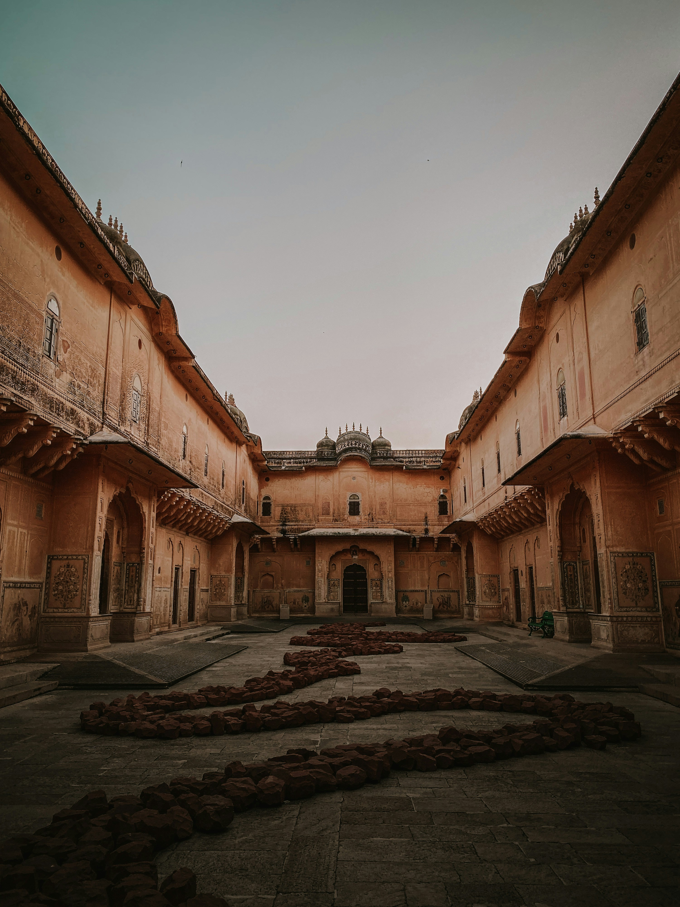
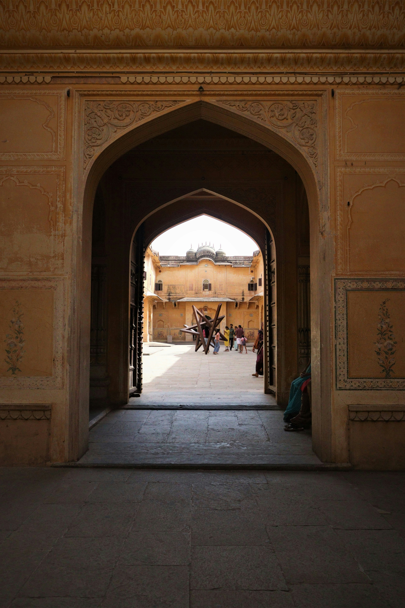
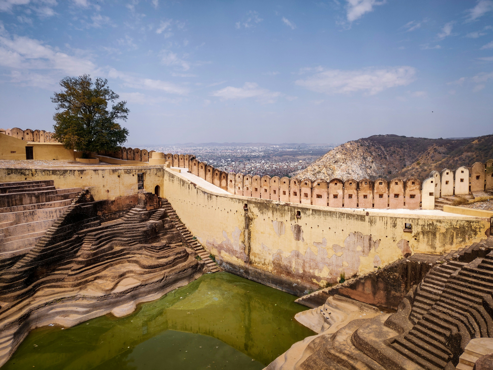

Nahargarh Fort, built in 1734, is a beautiful hill fort overlooking Jaipur. It is famous for sunset views and Madhavendra Palace.
History
Built by Maharaja Sawai Jai Singh II, it was used as a royal retreat. The fort forms a strong defense with Jaigarh and Amber Fort.
Architecture
The fort features sandstone walls, courtyards, symmetrical rooms, frescoes and scenic viewpoints.



How to Reach
Location: Jaipur outskirts. Ticket: INR 50 Best time to visit: October to March.